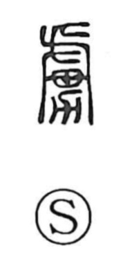

虜

Uncategorized
Kun: toriko | On: ryo, ro
captive ・ prisoner ・ slave
Explanation
A phono-semantic graph, 虜 takes its sound from a component that signals the On reading ryo, while its meaning centers on people seized in war. The Shuowen glosses it succinctly as “a person captured,” exemplified by the compound horyo, “war captive.” Early usage appears in the Book of Odes (Major Odes, Chang Wu), which recounts campaigns against the Huai tribes; the line 仍執醜虜 describes “repeatedly taking captives,” placing the character squarely in the context of wartime seizure.